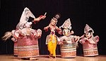

MANIPURI

As you stroll towards the North-east India which is brimming with the rich tradition and their unique culture, Manipuri comes as an important symbol to represent the state of Manipur from the region. This dance form is performed to narrate the romantic relationship between the Hindu gods Radha and Krishna, which is famously known as RaasLeela. This art form is performed in a team with the traditional Manipuri costumes and makeup to narrate the tale of the two gods. The dance is performed on the narrative chanting and the music created by the Indian classical instruments.